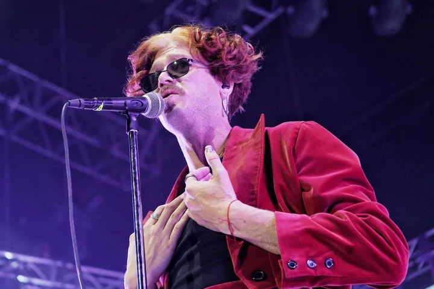

Ciro y Los Persas incendiaron la noche de Vélez con el mejor rock rioplatense Con un show de casi tres horas y una gran puesta en escena, el ex "piojoso" y su banda entregaron un recital demoledor. Para el Mundial, estarán tocando en Qatar.
Ciro Martinez ofreció este sábado (22 de octubre) su quinto show de estadios -el cuarto aquí, en Vélez Sarsfield-, presentando algunos temas de su último álbum, Sueños-Un Viaje en el Tiempo (año 2022, sucesor de Guerras- Un viaje en el tiempo de 2020) mezclados con un set list de clásicos de Los Piojos que congregaron a una multitud sedienta de buen rock argentino. Anunciado a las 21, el recital arrancó casi una hora después, y hasta comenzado el cuarto tema seguía entrando público al Amalfitani (impecable la organización de la productora 300, algo a lo que por suerte nos tiene bien acostumbrados). Como es casi un obligado en sus últimos presentaciones la banda levantó vuelo con Barón rojo, y a partir de ahí el fuerte frío nocturno comenzó a disiparse. Agitando las consabidas banderas (se sabe, los trapos son un elemento obligado del paisaje piojoso) de distintas localidades del conurbano, e incluso algunas del Interior, la multitud se entretenía previamente coreando una consigna rescatada de la época de Malvinas.

Aquel famoso “¡El que no salta/ es un inglés!” cumplió hace pocos meses 40 años de existencia. Y lo curioso fue escucharlo en el mismo estadio donde en 1981, o sea un año antes de la guerra, los ingleses de Queen se daban la mano con un argentinísimo Diego Maradona. Pero, claro, el tiempo y las circunstancias todo lo cambian. Y en este aspecto es bueno remarcar dónde reside, posiblemente, la valía de un espectáculo como el de anoche. En un tiempo en el que la industria local de la música ha sido cooptada por ritmos y artistas latinos, donde no sólo hay un aluvión de visitas de las llamadas internacionales, sino que hasta los propios nuevos artistas vernáculos se esfuerzan por lucir como foráneos, adoptando incluso una jerga idiomática que no les pertenece ni los representa, aquí en Vélez hubo un clima de (buena y saludable) argentinidad.
Bandalos Chinos llenó el Luna Park y demostró que es una de las bandas más populares del momento
La primera frase de Goyo lo dijo todo: "Bienvenidos y bienvenidas a la noche de nuestro sueños". Así, el sábado a noche ante casi diez mil personas, el cantante de Bandalos Chinos dejó en claro que tocar por primera vez en el Luna Park no era una fecha más dentro de su impresionante gira mundial, sino un verdadero hito en la carrera que iniciaron hace poco más de diez años. El crecimiento de Bandalos Chinos ya había quedado demostrado en shows como Lollapalooza Argentina 2017, un streaming desde Movistar Arena en 2020, el multitudinario Hipódromo de Palermo del año pasado y el desborde de gente en el Quilmes Rock 2022. 
Rumbo al Luna Hacer un Luna Park era un lógico siguiente paso, ideal para cerrar una gran temporada en el exterior. Concientes de la importancia del lugar, iniciaron el show con un video con la estética de los viejos noticieros de los cines, donde repasaron grandes hechos que ocurrieron en el estadio, como el velorio de Gardel, el encuentro de Perón con Evita, una pelea de Bonavena, el "Adiós Sui Generis", el casamiento de Maradona y los recitales de Rodrigo. Cerraron el repaso con "Bandalos Chinos en el Luna Park", levantaron el telón y comenzó un recital donde se los vio felices, disfrutando de la sala llena de fans que corearon todos los temas y les dedicarles cantitos de cancha. Una vista de la puesta de Bandalos Chinos en el Luna Park. Foto Martín Bonetto. La "banda los chinos" arrancó con luces de bola de espejos y el hit La fiesta. El sonido era impecable y la numerosa agrupación ocupó todo el escenario, sumándole al sexteto varios invitados en coros y vientos. A lo largo de la noche, en general eran once músicos en vivo. El cantante Goyo Degano ratificó su gran voz, carisma y dominio escénico, con pasitos de baile y una energía desbordante. Al comienzo lució una torerita roja con pantalón de tiro alto que bien podría haber usado Miguel Abuelo en sus Luna de los años '80). Luego se cambió a un conjunto casi idéntico pero con brillos. Goyo, el carismático cantante de Bandalos Chinos en el Luna Park. Foto Martín Bonetto. br>